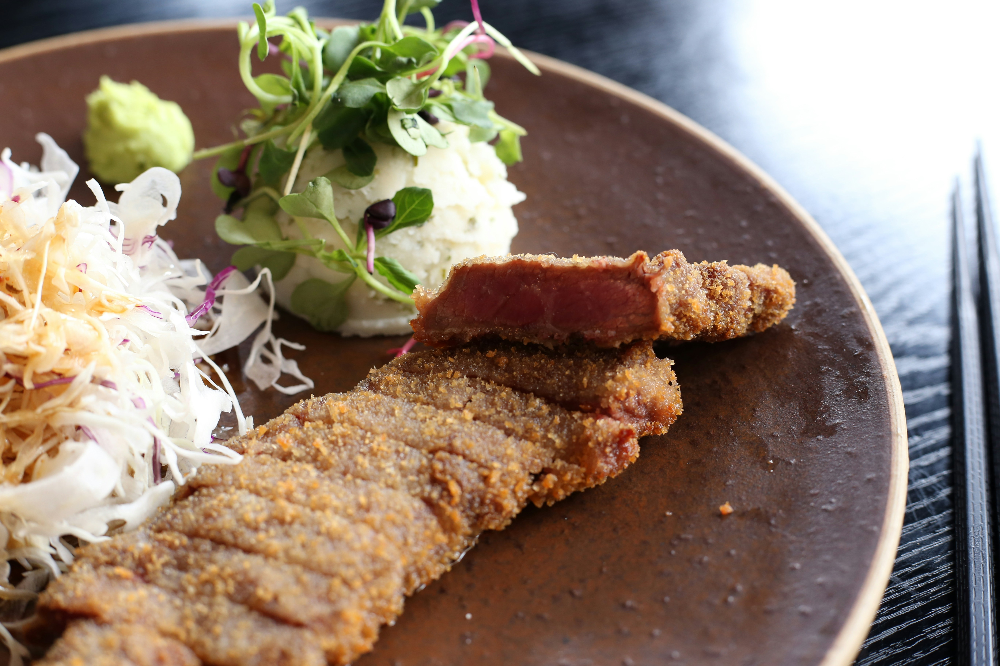

Milanesa

Descripción
La milanesa es un plato icónico, crujiente por fuera y jugoso por dentro, ideal para acompañar con papas fritas o ensalada.
Consiste en un corte de carne empanado y frito (o al horno) que nunca falla en la mesa diaria.
Ingredientes
- 500g de filetes de carne (nalga, bola de lomo o peceto)
- 2 huevos
- 1 cucharada de perejil fresco picado
- 1 diente de ajo picado finamente
- 1 cucharadita de mostaza
- 200g de pan rallado
- Sal y pimienta al gusto
- Aceite para freír
Pasos
- Limpiar los filetes de carne retirando el exceso de grasa.
- En un recipiente, batir los huevos junto con el ajo, el perejil, la mostaza, sal y pimienta.
- Pasar cada filete de carne por la mezcla de huevo, asegurando que quede bien cubierto.
- Pasar la carne por el pan rallado presionando firmemente con las manos para que se adquiera bien la cubierta.
- Calentar abundante aceite en una sartén a fuego medio-alto.
- Freír las milanesas durante 3 a 4 minutos por lado hasta que estén bien doradas, y escurrir en papel absorbente antes de servir.
Recetas